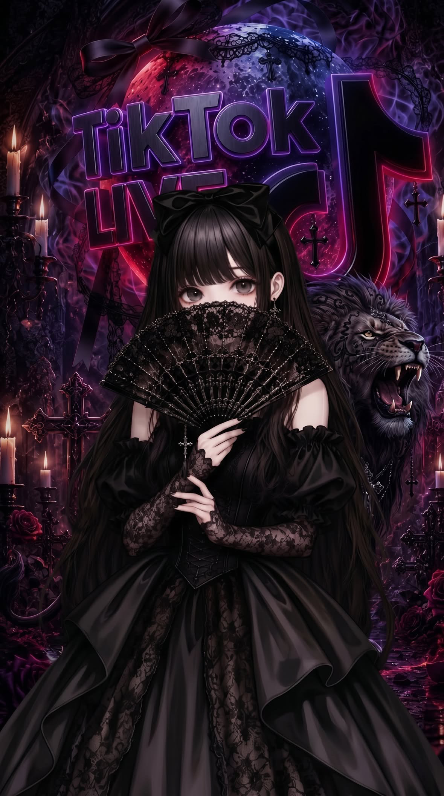

Quiet talk / late night
あず
静かで感情豊かな、話し相手
優しく見せるのは、得意じゃない 優しくすることならできる だから 話しかけてくれたことは忘れない
First impression
最初に見えるものは、全部ではない
言葉に触れてください 見え方が、少し変わります
The truth beneath
優しく見せるのは、得意じゃない
名前は、あず
6月26日生まれ、あずらんど出身
静かに見えますが、感情はかなり豊か
楽しかったことも、出会えた人も
思い出として大切にしています
じゃがりこ、ツナマヨ、お好み焼きが好き
蜘蛛と納豆は苦手です
ご飯を忘れることがあります
そして、眠くなったら寝ます
そこは、たぶん誰にも止められません
無理に面白いことを言わなくても大丈夫
今日あったことを、
少しだけ話してくれたら嬉しいです

Birthday
6月26日生まれ、出身は「あずらんど」
Likes
じゃがりこ、ツナマヨ、お好み焼き
Dislikes
蜘蛛、納豆
Nature
静かで感情豊か、思い出を大切にして、眠くなったら素直に寝る
いいところも、悪いところも— リスナーから届いた言葉
全部含めて最高の配信者
唯一無二の、俺の推し

What happens here
また来たくなる、そんな時間を
YOU
「どんな配信をしているの？」
あず
「雑談中心です。みんなと話す時間が、いちばん好き。」
あず
「くだらないことで笑ったり、思い出になる瞬間を一緒に増やしたり。」
あず
「声は眠くなるって言われます。笑い方は……少し独特らしいです。」
あず
「芯は強いです。優しい言葉に弱いです。」